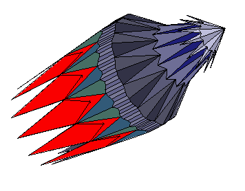

В данном разделе мы создадим модель огранки которую назовем
волнистым супермультифасетом. Иногда эту огранку называют еще звездной.
По ссылке WavySuperMultifacet - Light Dispersion
можно увидеть этот многогранник отображенный при помощи кубических карт. При нажатии на приведенной по ссылке
странице кнопки Inverse многогранник отобразится на черном фоне.
Еще одна подобная
огранка,
но с меньшим количеством граней.
Для многогранника супермультифасет мы создадим возможность сделать рундист волнистым. Как уже говорилось ранее все огранки должны быть выпуклыми. Исключение делается только для рундиста сердца или для рундиста огранок подобных рассмотренным в предыдущей главе.
Для волнистого супермультифасета проверка модели на выпуклость разделена на две части. Сначала проверяется отдельно выпуклость короны, а затем отдельно проверяется выпуклость всех граней павильона. Так как рундист может быть невыпуклым, то он исключается из проверки.
Модель содержит достаточно много граней и вершин, поэтому при изменении значений параметров и, особенно, при выводе нумерации вершин требуется некоторое время. Желательно использовать компьютер с быстрой графикой.
Схематичные изображения короны и павильона огранки, а также нумерация вершин показаны на рисунках 1 и 2.

// СДМ - структура данных модели var lw = 1.0; // Отношение длины огранки к ее ширине // Рундист var r = 0.2; // Толщина рундиста waviness = -0.016; // Задает волнистость рундиста // Корона var hCrown = 0.28; // Высота короны var t = 0.05; // Размер площадки var crown_mid_diam = 0.77; // Определяет размер эллипса опоясывающего корону в ее средней части. // На этом диаметре расположены вершины короны 24, 25, .... 35. var hCrownMid = 0.16; // Задает высоту вершин короны 24, 25, .... 35. var hCrownUp = 0.085; // Задает высоту вершин короны 12, 13, ... 22, 23. // Павильон var hp = 0.46; // Глубина павильона var pav_mid_diam = 0.7; // Определяет размер эллипса опоясывающего павильон в его средней части. var hPavMiddle = 0.28; // Задает глубину горизонтальной плоскости на которой расположен эллипс // с вершинами в средней части павильона. var pav_down_diam = 0.33; // Определяет размер эллипса опоясывающего павильон в его нижней части. var hPavDown = 0.47; // Задает глубину горизонтальной плоскости на которой расположен эллипс // с вершинами в нижней части павильона. var hPavFacet = 0.9; // Задает глубину вершин павильона 48, 49, 10, ... 58, 59.
Построение рундиста рассмотрено в разделе "Построение кривой waviness" главы 4. При помощи частичных сумм функциональных рядов можно создать практически замкнутую кривую любого вида.
По ссылке можно увидеть еще одну мою огранку рундист которой сделан на основе функционального ряда. А перейдя на страницу вы найдете несколько сделанных мной других подобных огранок.
// Вспомогательные переменные и объекты
var Z1 = new Vector3D(0,0,1);
var Y1 = new Vector3D(0,1,0);
var X1 = new Vector3D(1,0,0);
var norm2d = new Vector2D;
var normPlaneVector = new Vector3D();
var i, j;
// Создаем волнистый рундист
FillGirdle_WavyMultifacet();
// Конструируем корону
// Горизонтальная плоскость на уровне площадки
var hTable = hCrown + r/2;
var plane_Table = new Plane3D();
plane_Table.CreatePlaneNormalDistOXYZ(Z1, hTable);
// Вертикальная плоскость на расстоянии t/2 от начала координат по оси Y.
var vert_t2 = new Plane3D();
vert_t2.CreatePlaneNormalDistOXYZ(Y1, t/2);
// Создаем вертикальную плоскость проходящую через girdle[4] и начало координат
var pl_g4 = new Plane3D();
pl_g4.CreatePlaneThreePoints(new Point3D(0,0,0), new Point3D(0,0,1), girdle[4]);
// Находим положение вершины 0 короны.
crown[0] = plane_Table.IntersectionThreePlanes(pl_g4, vert_t2);
// Находим радиус окружности (ось эллипса) для расчета вершин площадки
var y = Math.sin( 90*DEGREE - 4 * (2 * M_PI / 96) );
var r_table = crown[0][1] / y;
// Расчет вершин короны расположенных на площадке
FillEllipse(r_table);
for (i = 0; i < 12; i++)
{
crown[i] = new Point3D(temp[i][0], temp[i][1], hTable);
}
// Расчет вершин короны расположенных на линии эллипса заданной параметром crown_mid_diam.
// Эллипс лежит на плоскости расположенной на высоте заданной параметром hCrownMid
FillEllipse(0.5 * crown_mid_diam);
for (i = 0; i < 12; i++)
{
crown[24+i] = new Point3D(temp[i][0], temp[i][1], r/2 + hCrownMid);
}
// Определяем плоскости в которых лежат грани A0, A1, A2, A3, A4, A5, A6, A7, A8, A9, A10, A11;
// Векторы задающие азимуты граней A0 - A11
var v0 = new Vector3D(girdle[0][0] - girdle[8][0], girdle[0][1] - girdle[8][1], 0.0);
var v1 = new Vector3D(girdle[8][0] - girdle[16][0], girdle[8][1] - girdle[16][1], 0.0);
.........................................................................................
var v11 = new Vector3D(girdle[88][0] - girdle[0][0], girdle[88][1] - girdle[0][1], 0.0);
var A0 = new Plane3D();
A0.CreatePlaneVectorTwoPoints(v0, crown[24], girdle[4]);
var A1 = new Plane3D();
............................................................
var A11 = new Plane3D();
A11.CreatePlaneVectorTwoPoints(v11, crown[35], girdle[92]);
// Грани B0, B1, B2, B3, B4, B5, B6, B7, B8, B9, B10, B11;
var B0 = new Plane3D();
B0.CreatePlaneVectorTwoPoints(v0, crown[0], crown[24]);
var B1 = new Plane3D();
...........................................................
var B11 = new Plane3D();
B11.CreatePlaneVectorTwoPoints(v11, crown[11], crown[35]);
// Плоскость определяющая высоту треугольных граней примыкающих к площадке
var pl_crown_up = new Plane3D();
pl_crown_up.CreatePlaneNormalDistOXYZ(Z1, hCrownUp + r/2);
// Вершины 12 - 23 короны
crown[13] = pl_crown_up.IntersectionThreePlanes(B0, B1);
crown[14] = pl_crown_up.IntersectionThreePlanes(B1, B2);
.........................................................
crown[23] = pl_crown_up.IntersectionThreePlanes(B10, B11);
crown[12] = pl_crown_up.IntersectionThreePlanes(B11, B0);
// Четырехугольники среднего ряда короны C0, C1, C2, C3
var C0 = new Plane3D();
C0.CreatePlaneThreePoints(crown[12], crown[35], crown[24]);
var C1 = new Plane3D();
C1.CreatePlaneThreePoints(crown[13], crown[24], crown[25]);
var C2 = new Plane3D();
C2.CreatePlaneThreePoints(crown[14], crown[25], crown[26]);
var C3 = new Plane3D();
C3.CreatePlaneThreePoints(crown[15], crown[26], crown[27]);
// Вершины нижнего яруса короны (около рундиста)
crown[36] = C0.IntersectionThreePlanes(A11, A0);
crown[37] = C1.IntersectionThreePlanes(A0, A1);
crown[38] = C2.IntersectionThreePlanes(A1, A2);
crown[39] = C3.IntersectionThreePlanes(A2, A3);
// Остальные вершины нижнего яруса короны (около рундиста)
crown[40] = new Point3D( crown[38][0], -crown[38][1], crown[38][2]);
crown[41] = new Point3D( crown[37][0], -crown[37][1], crown[37][2]);
crown[42] = new Point3D( crown[36][0], -crown[36][1], crown[36][2]);
crown[43] = new Point3D( -crown[41][0], crown[41][1], crown[41][2]);
crown[44] = new Point3D( -crown[40][0], crown[40][1], crown[40][2]);
crown[45] = new Point3D( -crown[39][0], crown[39][1], crown[39][2]);
crown[46] = new Point3D( -crown[38][0], crown[38][1], crown[38][2]);
crown[47] = new Point3D( -crown[37][0], crown[37][1], crown[37][2]);
// Корректировка положения вершин рундиста со стороны короны.
corr_gd_crown(0, 4, 36);
corr_gd_crown(4, 8, 37);
.........................
corr_gd_crown(92, 0, 36);
var kollet = new Point3D(0, 0, - hp - r/2);
// Расчет вершин павильона расположенных на линии эллипса заданной параметром pav_mid_diam.
// Эллипс лежит на плоскости расположенной на высоте заданной параметром hPavMiddle
FillEllipse(0.5 * pav_mid_diam);
for (i = 0; i < 12; i++)
{
pavil[12+i] = new Point3D(temp[i][0], temp[i][1], - r/2 - hPavMiddle);
}
// Расчет вершин павильона расположенных на линии эллипса заданной параметром pav_down_diam.
// Эллипс лежит на плоскости расположенной на высоте заданной параметром hPavDown
FillEllipse(0.5 * pav_down_diam);
for (i = 0; i < 12; i++)
{
pavil[36+i] = new Point3D(temp[i][0], temp[i][1], - r/2 - hPavDown);
}
// Грани D0, D1, D2, D3, D4, D5, D6, D7, D8, D9, D10, D11;
// Векторы v0 - v11 найдены при расчете короны.
var D0 = new Plane3D();
D0.CreatePlaneVectorTwoPoints(v0, pavil[12], girdle[100]);
var D1 = new Plane3D();
D1.CreatePlaneVectorTwoPoints(v1, pavil[13], girdle[108]);
..........................................................
var D11 = new Plane3D();
D11.CreatePlaneVectorTwoPoints(v11, pavil[23], girdle[188]);
// Грани E0, E1, E2, E3, E4, E5, E6, E7, E8, E9, E10, E11;
var E0 = new Plane3D();
E0.CreatePlaneVectorTwoPoints(v0, pavil[36], pavil[12]);
var E1 = new Plane3D();
E1.CreatePlaneVectorTwoPoints(v1, pavil[37], pavil[13]);
.........................................................
var E11 = new Plane3D();
E11.CreatePlaneVectorTwoPoints(v11, pavil[47], pavil[23]);
// Грани F0, F1, F2, F3, F4, F5, F6, F7, F8, F9, F10, F11;
var F0 = new Plane3D();
F0.CreatePlaneVectorTwoPoints(v0, kollet, pavil[36]);
var F1 = new Plane3D();
F1.CreatePlaneVectorTwoPoints(v1, kollet, pavil[37]);
.....................................................
var F11 = new Plane3D();
F11.CreatePlaneVectorTwoPoints(v11, kollet, pavil[47]);
// Горизонтальная плоскость на уровне заданном параметром hPavFacet
var pl_pav_facet = new Plane3D();
pl_pav_facet.CreatePlaneNormalDistOXYZ(Z1, - hPavFacet * hp - r/2);
// Вершины 48 - 59 павильона
pavil[48] = pl_pav_facet.IntersectionThreePlanes(F11, F0);
pavil[49] = pl_pav_facet.IntersectionThreePlanes(F0, F1);
...........................................................
pavil[59] = pl_pav_facet.IntersectionThreePlanes(F10, F11);
// Грани H0, H1, H2, H3, H4, H5, H6, H7, H8, H9, H10, H11;
var H0 = new Plane3D();
H0.CreatePlaneThreePoints(pavil[47], pavil[36], pavil[48]);
var H1 = new Plane3D();
H1.CreatePlaneThreePoints(pavil[36], pavil[37], pavil[49]);
...........................................................
var H11 = new Plane3D();
H11.CreatePlaneThreePoints(pavil[46], pavil[47], pavil[59]);
// Вершины 24 - 35 павильона
pavil[24] = H0.IntersectionThreePlanes(E11, E0);
pavil[25] = H1.IntersectionThreePlanes(E0, E1);
..................................................
pavil[35] = H11.IntersectionThreePlanes(E10, E11);
// Грани G0, G1, G2, G3, G4, G5, G6, G7, G8, G9, G10, G11;
var G0 = new Plane3D();
G0.CreatePlaneThreePoints(pavil[24], pavil[23], pavil[12]);
var G1 = new Plane3D();
G1.CreatePlaneThreePoints(pavil[25], pavil[12], pavil[13]);
............................................................
var G11 = new Plane3D();
G11.CreatePlaneThreePoints(pavil[35], pavil[22], pavil[23]);
// Вершины 0 - 11 павильона
pavil[0] = G0.IntersectionThreePlanes(D11, D0);
pavil[1] = G1.IntersectionThreePlanes(D0, D1);
.................................................
pavil[11] = G11.IntersectionThreePlanes(D10, D11);
// калетта
pavil[60] = new Point3D(kollet[0], kollet[1], kollet[2]);
// Корректировка положения вершин рундиста со стороны павильона.
corr_gd_pav(96, 100, 0);
corr_gd_pav(100, 104, 1);
...........................
corr_gd_pav(188, 96, 0);
Если отменить проверку многогранника на выпуклость и расширить диапазоны изменения значений параметров а также цвет некоторых граней, то можно получить, варьируя параметры, совершенно неожиданные модели. Например, такую:
